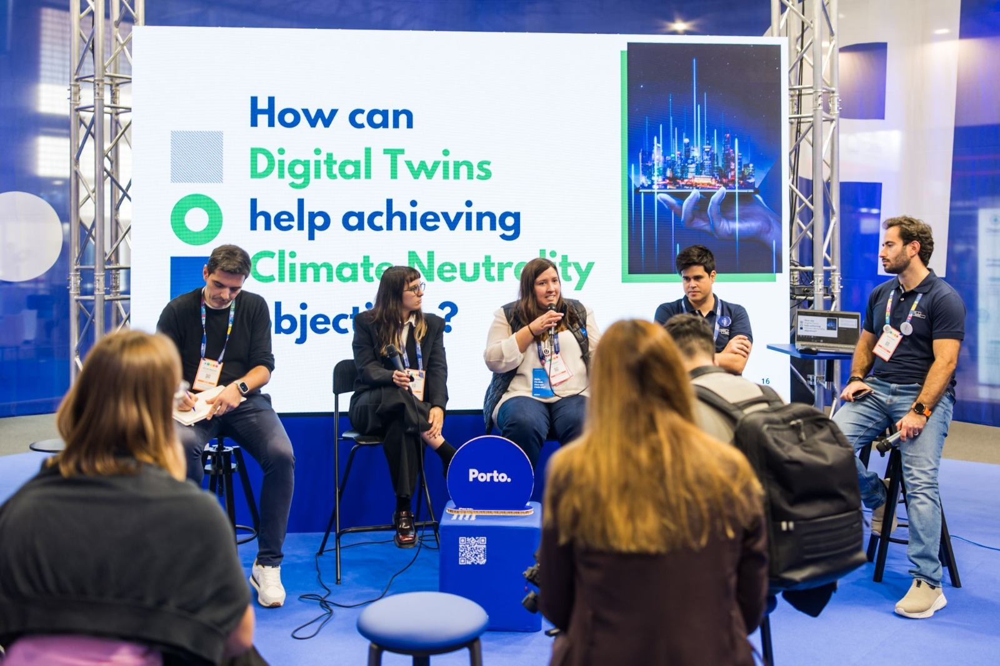
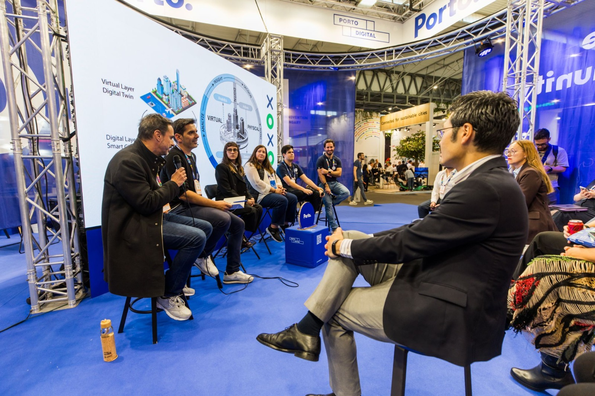
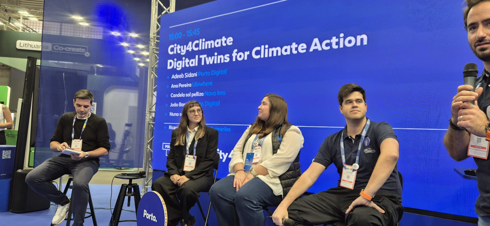

Building the Future of Urban Intelligence with Digital Twins
Presenting the City4Climate project advancements



The Smart City Expo World Congress is one of the leading international events on smart cities, urban innovation and sustainability. The 2025 edition brought together 1,100 exhibitors and 27,000 participants from 143 countries.
Within the City4Climate project, coordinated by NOVA Cidade – Urban Analytics Lab (NOVA IMS), a roundtable was held on climate governance and the role of digital twins. Partners Ubiwhere, CCG/ZGDV Institute and Porto Digital joined the discussion.
The session focused on three themes. The first was digital twins as tools to support local climate governance. The second was system architecture and data integration through open standards such as NGSI-LD and FIWARE. The third was Climate City Contracts as a strategic instrument for local decarbonisation, in line with the EU Cities Mission.
The project's progress was presented in three areas: the development of the system architecture, the implementation of Climate City Contracts in Porto, Lisbon and Guimarães, and early results in the integration, simulation and visualisation of urban data.
A dedicated stand showcased early versions of the open-source digital twin framework, along with real-time dashboards and analytical tools.
- Digital Twins
- Decarbonization